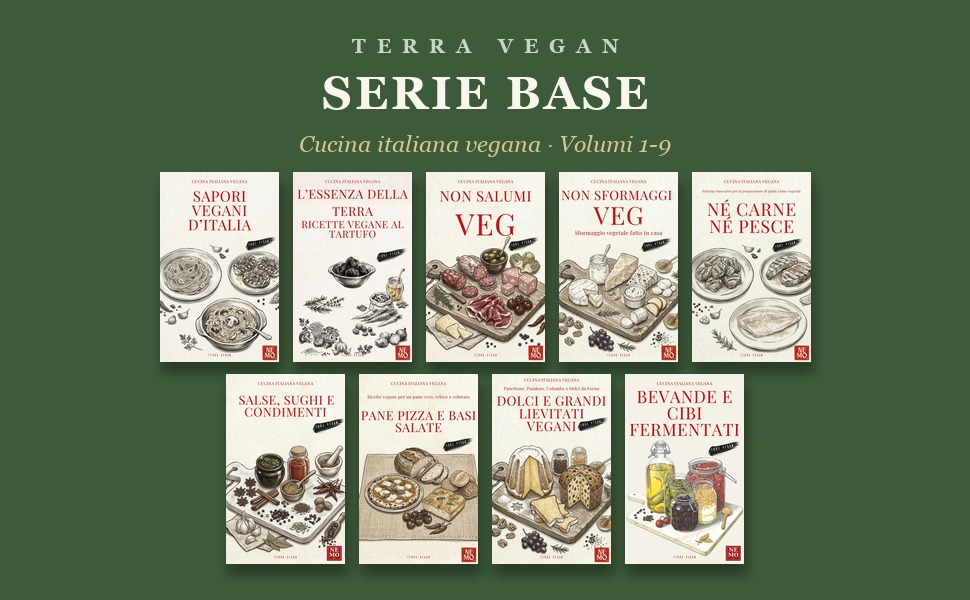
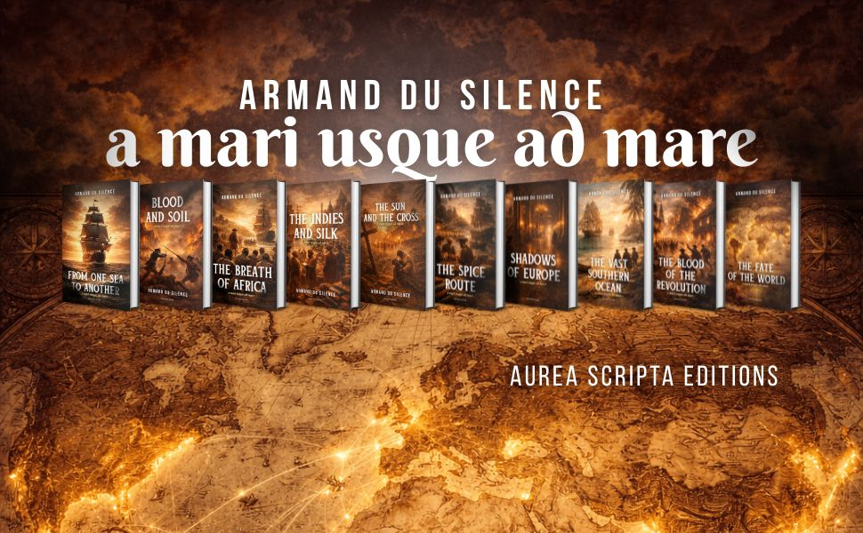

Due penne per ogni libro: la tua, che conosce la storia, e la nostra, che sa scriverla.
Primo colloquio gratuitoDualPen Books è uno studio editoriale indipendente: scriviamo, curiamo e pubblichiamo libri, i nostri e quelli dei nostri clienti.
Le nostre collane sono la prova del mestiere: 40 manuali tecnici, una serie pubblicata in 14 lingue, una saga storica in dieci romanzi, 290 edizioni in catalogo, curate per intero, dal testo alla copertina, dall'impaginazione alla distribuzione sugli store.
Per i clienti facciamo la stessa cosa: prendiamo la tua storia, la tua competenza o la tua idea e la trasformiamo in un libro finito, scritto bene, pubblicato dove serve, nella lingua che serve.
Siamo uno studio piccolo con una dotazione da squadra: redazione e riscrittura, ricerca storica e documentale, interviste e trascrizioni, traduzione professionale a doppia revisione in tre lingue, grafica di copertina, impaginazione cartaceo ed EPUB, pubblicazione sugli store e stampa a richiesta. Tutto sotto lo stesso tetto, senza passaggi di mano.
Ghostwriter, scrittore fantasma, presta penna: chiamatelo come preferite, il mestiere è lo stesso, dare forma di libro alla tua storia.
La tua storia, o quella della tua famiglia, raccolta a voce e trasformata in un libro da tramandare.
Hai la trama e i personaggi in testa ma non il tempo o la penna: li portiamo noi sulla pagina, con la tua voce.
La tua competenza diventa un libro chiaro, ordinato e autorevole, che lavora per te.
La storia della tua azienda o il libro che ti posiziona come riferimento del tuo settore.
Hai già un testo: lo rimettiamo in forma, dalla struttura alla singola frase.
Copertina, impaginazione cartaceo ed EPUB, caricamento sugli store, stampa tramite partner. Un singolo passaggio o l'intero viaggio.
Il tuo libro in inglese, francese e tedesco; spagnolo, portoghese e altre lingue europee su preventivo. Filiera a doppia revisione, a prova di errore.
Un matrimonio, una laurea, un premio, un'assemblea: le parole giuste per il momento giusto, scritte per la tua voce.
Ricerche bibliografiche, revisione, impaginazione, copertina. La scrittura resta tua: ti diamo gli strumenti, non la scorciatoia.

40 manuali di cucina vegana tecnica firmati Nemo, con la Serie Base pubblicata in 14 lingue. terraveganbynemo.com

Una saga storica in dieci romanzi firmata Armand Du Silence, pubblicata in tre lingue. aureascripta.com
La penna tecnica: cucina professionale, fermentazioni, normativa, impresa. Rigore da laboratorio, lingua da tavola.
La penna dei romanzi: saghe familiari, commerci e oceani, tre secoli di storia raccontati da vicino.
Il biografo dello studio, membro di una rete europea di biografi professionisti: storie di vita e memorie di famiglia, in Italia e all'estero.
Redattrice di lungo corso, la penna dell'ordine: trasforma studi, appunti e pensieri sparsi in libri compiuti. Saggi, testi di fede e di pensiero, libri che posizionano chi li firma.
| Progetto | A partire da |
|---|---|
| Racconto o progetto breve | 2.500 € |
| Biografia o memoir | 6.000 € |
| Manuale, saggio o libro d'impresa | 7.000 € |
| Romanzo | 9.000 € |
| Pacchetto pubblicazione (copertina, impaginazione, EPUB, store) | 1.500 € |
| Consulenza oraria | 150 € |
Ogni libro è diverso: il preventivo esatto arriva dopo il primo colloquio, gratuito e senza impegno. Traduzioni quotate a parte.
Sei un editore o un’agenzia? Lavoriamo anche conto terzi: ghostwriting per i vostri autori, editing, traduzioni, collane chiavi in mano.
Lo studio dietro altri cataloghi →Le domande che ci fanno più spesso, con risposte vere e senza giri di parole: una pagina per ciascuna.
Le fasce di prezzo reali in Italia, cosa è compreso davvero e dove si nascondono i costi extra.
Da soli, con un familiare o con un biografo professionista: le tre strade a confronto, con onestà.
Il percorso in cinque passi, dal colloquio gratuito al libro finito: contratto, interviste, capitoli da approvare.
La storia dei genitori o dei nonni trasformata in libro: le cifre in chiaro e perché il tempo conta.
Dal manoscritto nel cassetto al libro stampato, o dai racconti al libro scritto da zero.
Non solo biografie: manuali tecnici, saggi, romanzi, libri d'impresa e altro. La competenza è tua, il mestiere è nostro.
Matrimoni, anniversari, premiazioni, interventi in pubblico: le parole giuste per il momento giusto, scritte per la tua voce.
Le cifre vere, da cosa dipendono, e da cosa diffidare: la guida onesta per chi parte da zero.
Ottant'anni, nozze d'oro, una pensione: la storia di una persona cara trasformata nel regalo che resta.
Tra Firenze e Arezzo, colloqui anche di persona: la tua storia scritta da chi conosce questa terra.
Dal manoscritto nel cassetto al libro sugli store: le tre strade vere, senza promesse da bancarella.
La storia dell'impresa o il libro che ti posiziona nel settore: il biglietto da visita che nessuno può copiare.
Il primo colloquio è gratuito e senza impegno.
Scrivici due righe sul tuo progetto: ti risponde Giovanni Casali, coordinatore editoriale:
suo il primo colloquio, sua la scelta della penna giusta e la regia del progetto, dal preventivo alla consegna.